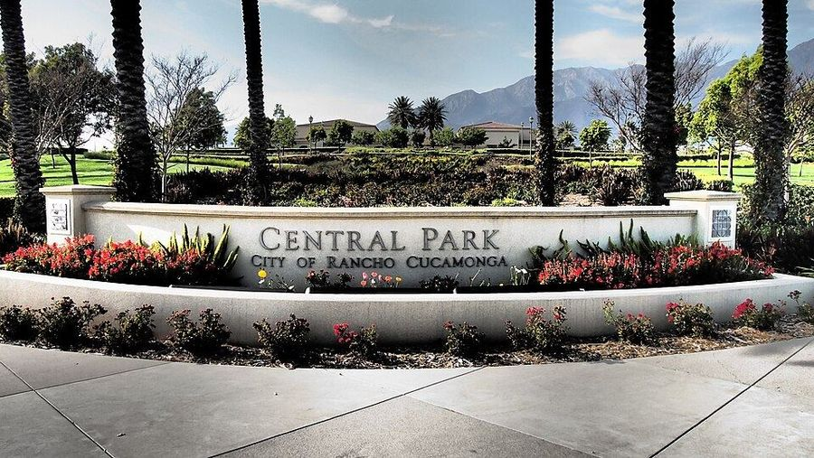

The Bark at Central Park Fenced
- Fenced Yes — three separate one-acre enclosures on a 4.4-acre site (City)
- Water Yes — water fountains for dogs and human companions (City)
- Small-dog area Yes — dedicated areas for small, medium, and large dogs (City FAQ)
- Hours Dawn to dusk, 7 days a week; the City says hours may be adjusted
Opened fall 2023 (City FAQ: Sept 25, 2023). Shade structures, seating, agility equipment, drought-tolerant landscaping. Report dog bites to RC Animal Center Field Services at 909-466-7387; report damaged equipment via RC2GO.